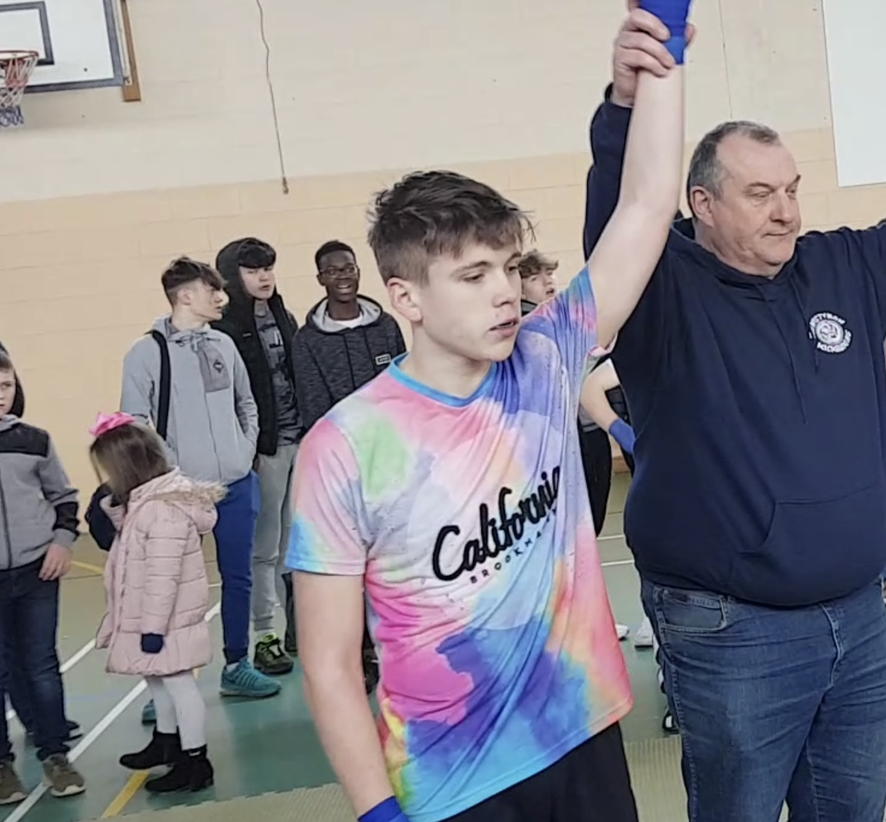
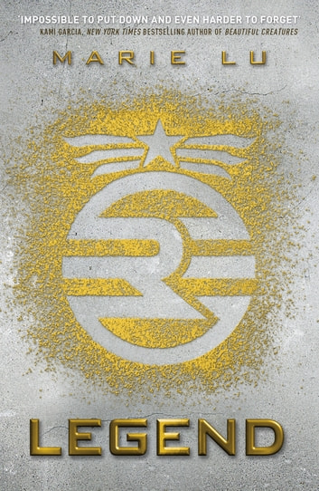

One of my favorite hobbies currently is learning coding outside of school. I got into it at the start of Summer 2022 and I have been trying to stay consistent with it during this time. I have been following "The Odin Project" curriculum. Which focus heavily on project base learning and providing you with enough knowledge to the point where you know where to start but the rest you have to slowly try and figure it out on your own.
I also enjoy working out a lot and keeping myself fit. I believe that a strong body is strong mind. I tried many different forms of working out but currently I'm really enjoying calisthenics which focuses a lot more on body weight exercise as well as weighted calisthenics. But in the past I focused on using weight lifting to supplement my kickboxing career.

I also enjoy reading, I did'nt always enjoy reading. It just seemed to develop once I started to become older, I started to gravitate towards books. I find it hard to pick only one book that I would choose over others. Or genre over another but I guess if I had to choose one I believe I would choose Legend by Marie Lu. Below you find my favorite quote form the series.
“Each day means a new twenty-four hours. Each day means everything's possible again. You live in the moment, you die in the moment, you take it all one day at a time.”

At times when I'm not really busy I like to listen to music I think it helps me to change my mood at times and similar to how authors write books to express themselves I believe music to be a form of expression. I really like listening to a plethora of genres. Like rap,hip-pop,R&B, classical,jazz.